Kunst
„Ich spüre mich selbst durch Kunst.“ Acryl auf Leinwand, von kleinen Formaten bis zu Unikaten von fast drei Metern Breite.
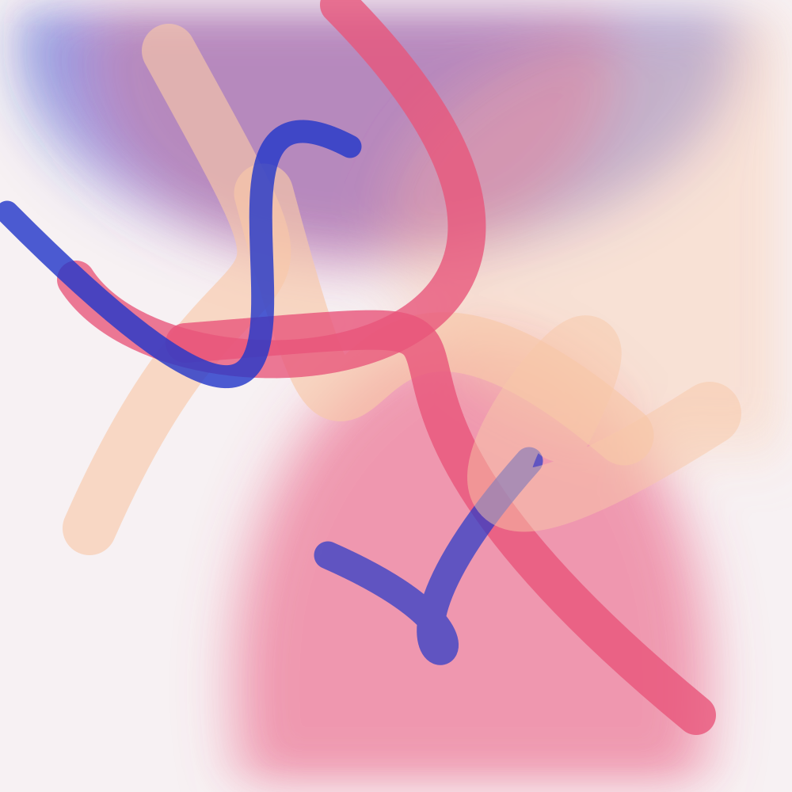
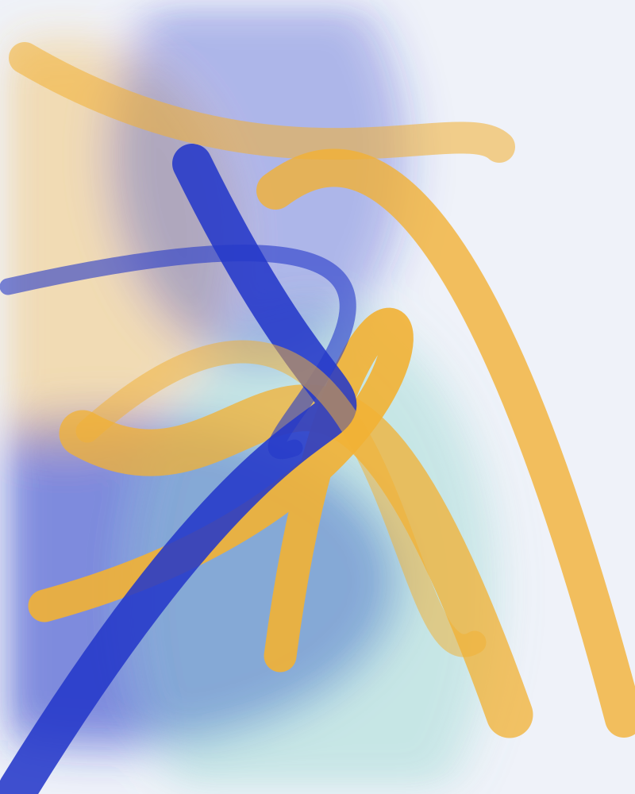
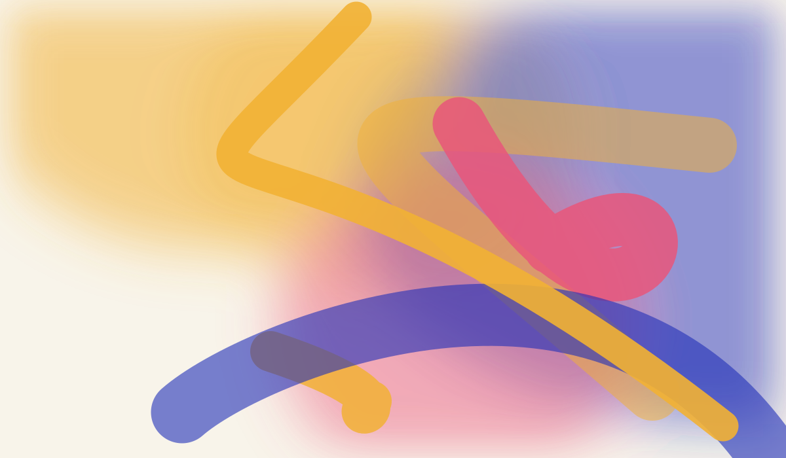
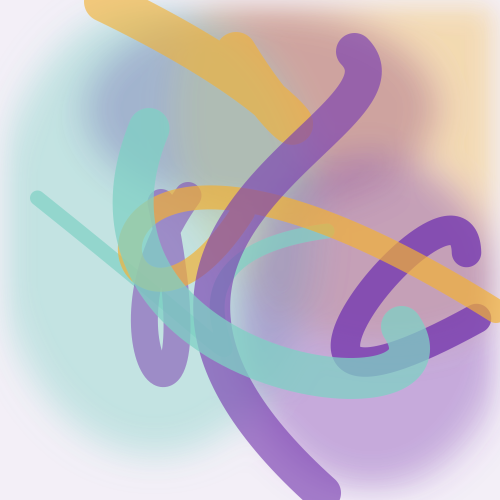
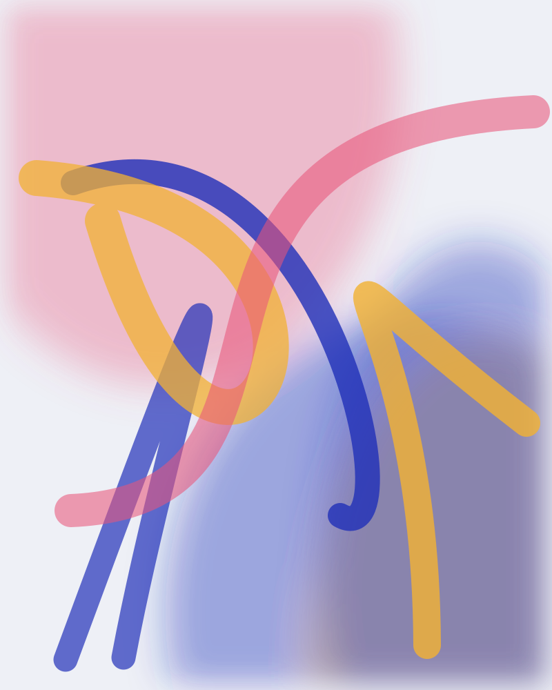
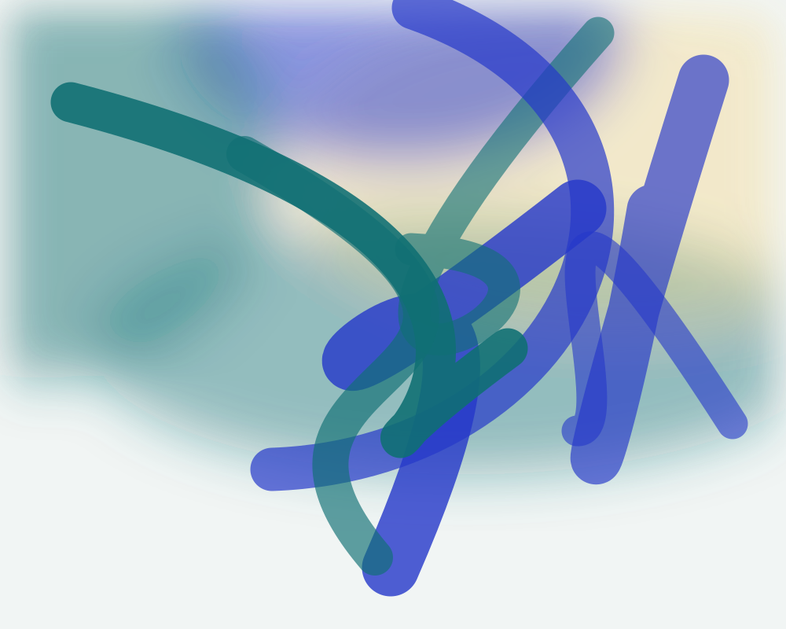
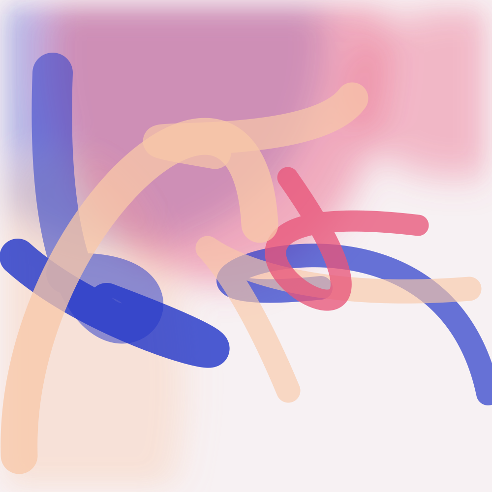
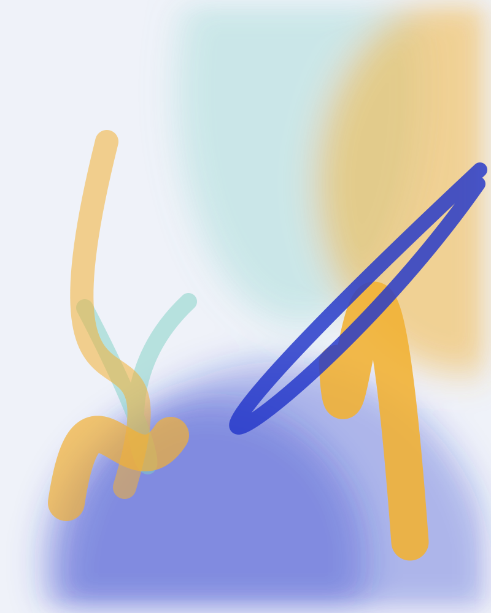
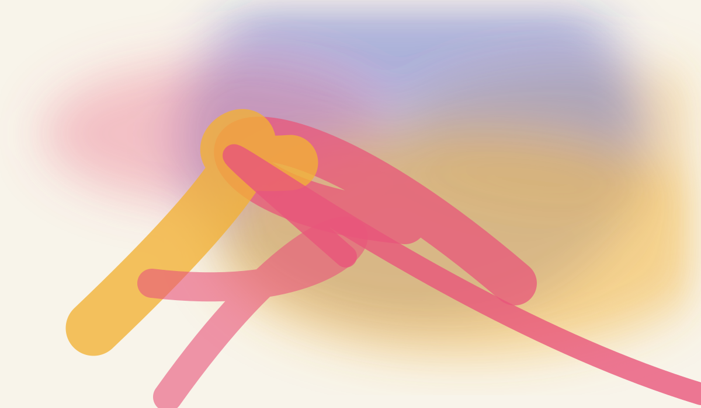
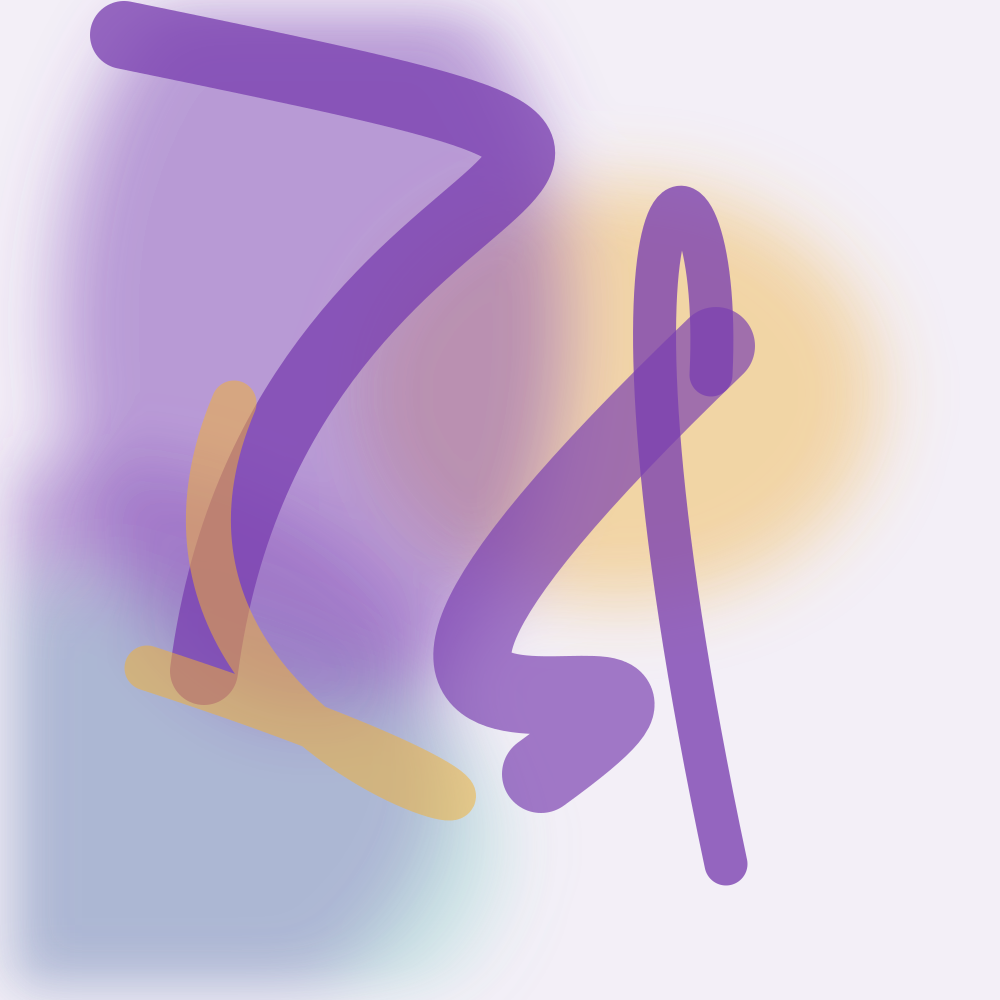
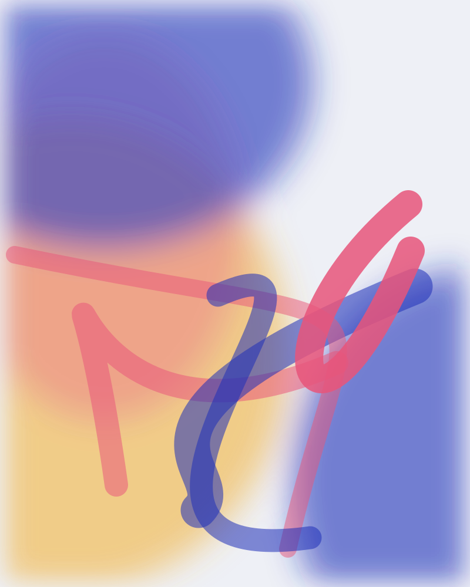
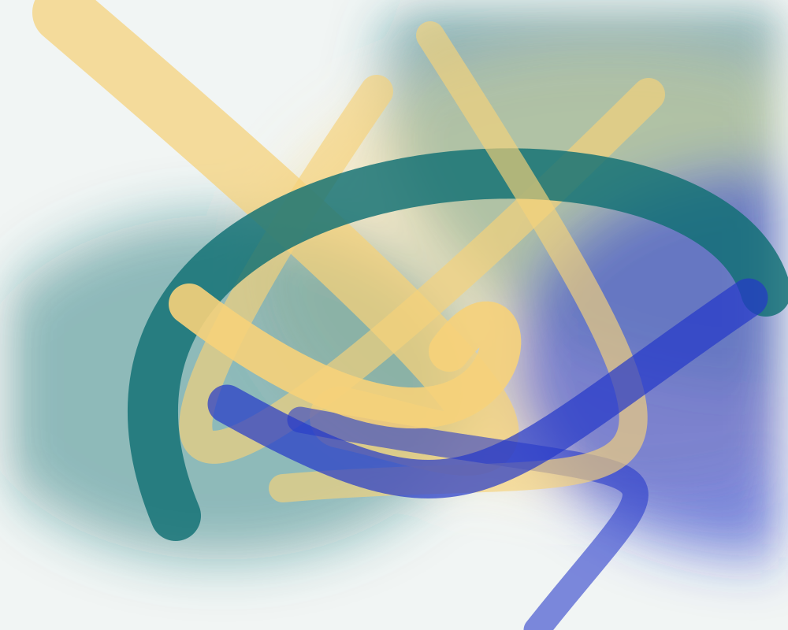
Die Abbildungen sind Platzhalter. Die Titel stammen aus Charlottes Werkreihe.
Auftragsarbeiten
Für Räume mit eigener Atmosphäre entstehen großformatige Unikate. Charlotte malt auch Visionen, die du im Kopf trägst.